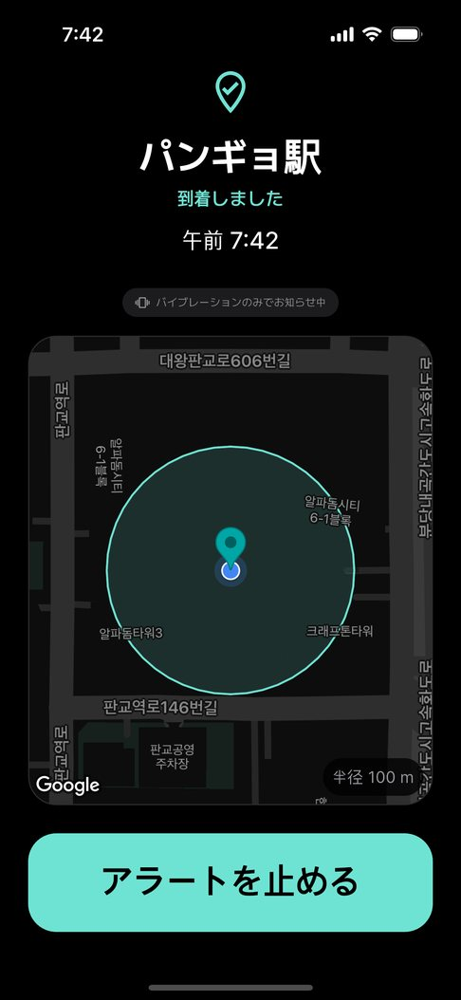

静かな図書館でアラームがスピーカーから鳴った瞬間、みんなの視線が集まります。イヤホンをしていたのに音が外に出て焦った、という経験は意外とよくあります。
端末やアプリによっては、イヤホンが接続されていてもアラーム音がスピーカーからも鳴ることがあるからです。
アプリなしで試せる方法
- マナーモード + 振動アラーム — 音は防げますが時間が基準なので、「どこかに着いたとき」や「離れるとき」は知らせてくれません。
- スマートウォッチの振動 — 手首で静かに受け取れます。スマートフォンの通知がウォッチに届くよう設定しておくと便利です。
大事なのは「スピーカーを一切使わないこと」
静かな場所で必要なのは音を小さくすることではなく、スピーカーからは絶対に鳴らないという保証です。一度漏れるだけで困りますから。
イヤホン位置通知は、接続中の機器を許可リストで確認します。有線・USB-C・Bluetooth イヤホンのときだけ音を鳴らし、確認できなければ振動だけ。カーオーディオのように外に音が出る機器はリストにありません。
静かな場所での使い方
- 図書館やオフィスを出るときに通知を受け取ることもできます。帰りに忘れたくないことがあれば「出発通知」で登録しておきましょう。
- 振動の強さは弱・中・強から選べます。場所に合わせて調整してください。
- Galaxy Watch や Apple Watch でスマートフォンの通知を受け取る設定にすれば、手首でも気づけます。

よくある質問
イヤホンが急に外れたらどうなりますか？
通知の瞬間にイヤホンの接続が確認できなければ、音は出さず振動だけになります。スピーカーに切り替わることはありません。
無料ですか？
無料です。広告が含まれますが、通知が鳴っている画面には広告を表示しません。